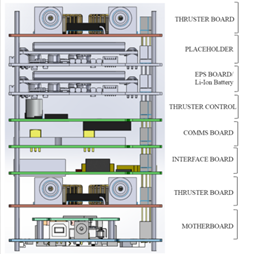
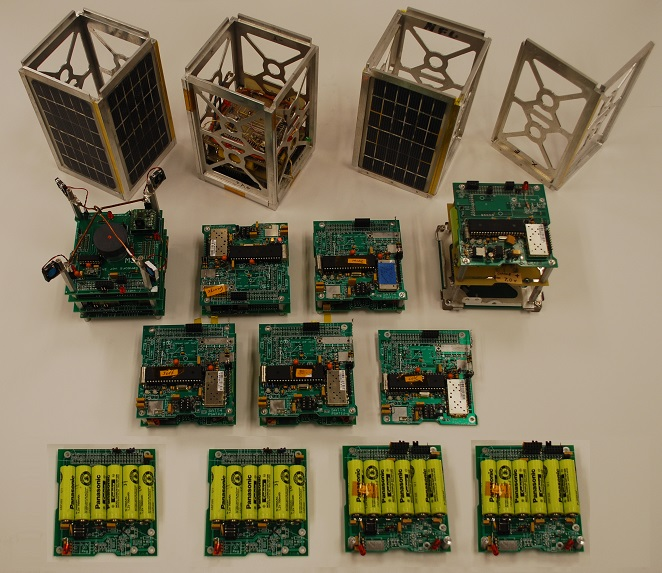

{kind=link}
OVERVIEW: . USNAP1 is a communications and electric micro-propulsion project of some students at the Naval Academy launched on the STP-2 SpaceX mission which should have a life span of several years.
USNAP1 continues the PCsat(2001) and PSAT(2015) missions noted above containing an APRS packet radio communications transponder for relaying remote users, telemetry, sensor and ham radio experimental data from remote users and amateur radio environmental experiments or other data sources to all users via the global network of internet linked volunteer ground stations. The APRS transponder also includes telemetry, and some command and control for the user modes.
 Operations under ITU Rules: USNAP1 operates under the ITU rules of the Amateur Satellite Service. See how USNAP1 design and operation fit entirely within the ITU International Amateur Radio RULES. The FCC does not issue licesnses for Amateur Radio Spacecraft but accepts the control operators filing his Advance Notice or API for documenting the operation. (see public notice) Amateur sateliltes are operated under the license of the individual amateur radio operator who is responsable to assure that both the design and operation are within the rules of the ITU as interpreted by the IARU.
Packet Downlink . . 145.825 1200 baud APRS (shared with ISS, PCSAT, PSAT2, AISAT, UO11 and others!)
Packet Uplink . . . . .145.825 MHz same as other satellites
Telemetry link . . . . 437.605 MHz for 9600 baud telemetry (callsign USNA14)
USNAP1 is another APRS satellite that can digipeat user packets just like the original PCSAT (NO44) and the packet system on the ISS. USNAP1 also supports the same digipeating alias of ARISS and APRSAT so that users do not have to change any parameters when using any of these three APRS transponders.
APRS Digipeater: When the DIGI is on, the satellite's call is USNAP1 and the TOCALL is APDIGI. When it is off, the callsign is USNAP1-1 and the tocall is APOFF. The ALIASes are the usual, ARISS, APRSAT.
LIVE Telemetry Downlink: Like other APRS satellites, the telemetry will also be captured on Steve Dimse's, K4HG original FINDU.COM links that we have now consolidated all APRS satelites onto the single page aprs.org/sats.html. Amateur APRS packet relay is the primary mission once the spacecraft passes its on-orbit checkout and propulsion experiments are no longer taking all available power.

 OVERVIEW: . USNAP1 is a project of some students at the Naval Academy
working with students at GW university to integrate propulsion into our communications cubesat
satellite designs following on to several previous student project satellites
which contain an APRS packet radio communications transponder for relaying remote telemetry,
sensor and user data
from remote users and amateur radio environmental experiments or other data sources back to
Amateur Radio experimenters via a global network
of internet linked volunteer ground stations. The data transponder also includes all
telemetry, command and control for a complete cubesat.
OVERVIEW: . USNAP1 is a project of some students at the Naval Academy
working with students at GW university to integrate propulsion into our communications cubesat
satellite designs following on to several previous student project satellites
which contain an APRS packet radio communications transponder for relaying remote telemetry,
sensor and user data
from remote users and amateur radio environmental experiments or other data sources back to
Amateur Radio experimenters via a global network
of internet linked volunteer ground stations. The data transponder also includes all
telemetry, command and control for a complete cubesat.
Operations in the Amateur Satellite Service: The APRS transponder on USNAP1 is operated in the Amateur Satellite Service to encourage amateur radio students, educators and experimenters around the world to contribute additional satellities to this constellation on 145.825 MHz or to build interesting self motivated remote sensors suitable for the uplink channel. See our ocean or bay oceanographic data buoys for examples. This kind of Amateur Radio experimentation fits well in the ITU rules (see BRICSAT2 justification) for operating in this service and well serve amateur radio's educational and outreach goals for student projects encouraging young people to be interested in Science, Technology, Engineering and Math.
APRS Packet Transponder: The COMMS card and APRS packet transponder (at right) is an AX.25 Packet Radio TNC similar to what is flying on PCsat and the ISS. This card evolved from the BYONICS.COM model MTT4B and modified to fit a standard Cubesat format. This ongoing APRS mission in space on the original PCsat is now over 18 years old and pioneered this very popular operating mode via the ISS since 2006. Both of these missions deliver packets to users worldwide via the global network of volunteer ground stations feeding the two downlink capture pages: psat.findu.com and ariss.net. These pages display live maps such as the one above, of the most recent user position data and capture all message traffic between users. See the APRS link budgets.
Attitude Control: The primary attitude control for USNAP1 is the electric Propulsion thrusters built in colaboration with students at the George Washington University. These offset thrusters can both change the attitude of USNAP1 but also do some orbit maneuvering to better distribute the 145.825 MHz channel access amongh the various APRS sateliltes.
Global Experimental Data Channel: USNAP1 supports the space segment of this global amateur radio APRS packet initiative to encourage both new satellite construction in support of this experimental data channel and lower cost amateur radio buoy and sensor experimentation at other schools as shown below. We hope to continue an ongoing full time presence in space to continue this support of the 145.825 data uplink channel for future experiments. To this end we hope other schools to either build additional 145.825 MHz relay satellites and/or to build experimental sensors. We have evolved the PSAT, PSAT2, USNAP1 cubesat design into a low cost wasy of building innexpensive amateur 1U cubesats we call PSAT1U as shwon below and on the PSAT1U web page. 
PSAT1U Development Projects: The APRS Comms mission on all our amateur sateliltes has now evolved into a common baseline for easily building innexpensive cubesats as shown above. Not only can they fly in space if lucky enough to find a launch, our students also build them forin-lab hands-on development testing. With torque coils embedded into the solar panels, they can be suspended on a string in the lab and demonstrate sun pointing and Bdot and other ADCS modes.